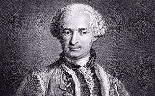

Борис Акунин
Мой календарь
Откуда он взялся, когда и где родился, так и осталось неизвестным. Сам граф иногда заявлял, что ему триста лет, иногда - что две тысячи. Впечатление, которое этот скромный человек с изысканными манерами производил на современников, было ошеломляющее. У Пушкина в «Пиковой даме» про Сен-Жермена говорится: «Вы знаете, что он выдавал себя за Вечного Жида, за изобретателя жизненного эликсира и философского камня, и прочая. Над ним смеялись, как над шарлатаном, а Казанова в своих Записках говорит, что он был шпион; впрочем, Сен-Жермен, несмотря на свою таинственность, имел очень почтенную наружность и был в обществе человек очень любезный. Бабушка до сих пор любит его без памяти и сердится, если говорят об нем с неуважением».
Утверждают, что Сен-Жермен умел добывать золото, сплавлять алмазы, предсказывать будущее, говорил на всех языках и знал все науки. Но истинная причина его феноменального успеха, по-видимому, заключалась в том, что этот талантливый химик изготавливал косметические снадобья, от которых дамы молодели и хорошели. На самом деле вполне хватило бы и этого, чтобы хозяйки парижских салонов провозгласили графа величайшим магом всех времен.
Почему мы сегодня вспоминаем Сен-Жермена? Потому что он умер 27 февраля. А может быть, и не умер. В некоторых справочниках написано: «Считается, что умер 27 февраля 1784 года». В других годы жизни стоят со знаками вопроса: 1712? - 1784?.
В церкви, правда, есть могильная плита. На ней высечено: «Здесь погребен тот, кто называл себя графом де Сен-Жерменом и Вельдоном, а более о нем ничего не известно».
Но покойника видели в Париже и после 1784 года. По уверениям многочисленных свидетелей, он неоднократно появлялся и в других местах. Говорят, он жив и до сих пор, потому что открыл тайну бессмертия.
27 февраля - один из тех дней, когда можно и нужно верить в чудеса. Ну, или хотя бы допускать, что они возможны.